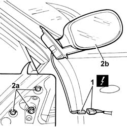

7005R30 ELECTRICALLY operated DOOR MIRROR (one) - R.R.
- Path
- Procedures > 70 FITTINGS > 7005 passenger compartment front side doors > 7005R FRONT DOOR MIRRORS > 7005R30 ELECTRICALLY operated DOOR MIRROR (one) - R.R.
- Kind
- repair procedure (removal / refitting; the operation number is the code)
- Applies to
- all engines; all production periods
- Interactive page
- https://sloeber94.github.io/elrnDB-lThss/en/#/79960
Applies to: all engines; all production periods
 Removing
Removing
 Refitting
Refitting- Disconnect the negative battery terminal.
See in Op. 7005E18 Front side door armrest - R.R.
See in Op. 7005E08 Front side door INTERIOR PANEL - R.R.
See in Op. 7005E42 Front side door frame MOUDLING - R.R.
1. Disconnect the electrical connector.
 | Description | Connector |
|---|---|---|
1 | Left external rear view mirror | P060 |
| Description | Connector |
|---|---|---|
1 | Right external rear view mirror | P061 |
2. Undo the bolts (2a) and remove the external rear view mirror (2b).

Applies to: all engines; all production periods
Refitting
Removing- Fit the external rear view mirror in the housing and restore the routing of the electrical wiring.
- Connect the electrical connector.
| Description | Connector |
|---|---|---|
. | Left external rear view mirror | P060 |
| Description | Connector |
|---|---|---|
. | Right external rear view mirror | P061 |
- Tighten the bolts fixing the external rear view mirror.
- Connect the negative battery terminal.
- Check that the external rear view mirror is working properly.
See in Op. 7005E42 Front side door frame MOUDLING - R.R.
Topics linked from this page (3)
- 7005E08 Front side door INTERIOR PANEL - R.R.
- 7005E18 Front side door armrest - R.R.
- 7005E42 Front side door frame MOUDLING - R.R.
Topics that link to this page (9)
- J41 LEFT EXTERNAL REAR VIEW MIRROR ELECTRICAL ADJUSTMENT NOT WORKING
- J42 RIGHT EXTERNAL REAR VIEW MIRROR ELECTRICAL ADJUSTMENT NOT WORKING
- J43 LEFT DOOR MIRROR DEFROSTING NOT WORKING
- J44 RIGHT DOOR MIRROR DEFROSTING NOT WORKING
- J46 LEFT DOOR MIRROR DOES NOT FOLD IN OPEN/CLOSED POSITION
- J47 RIGHT DOOR MIRROR DOES NOT FOLD IN OPEN/CLOSED POSITION
- 7005D18 Front side door DESCENDING WINDOW GLASS CHANNEL (one), left or right - r r
- 7005D20 Front side door DESCENDING WINDOW GLASS FRONT GUIDE (one), left or right - R.R. with door panel removed
- 7005D21 Front side door descending window glass front guide (one), left or right r r